RDF
Mikel Egaña Aranguren
mikel-egana-aranguren.github.io

Mikel Egaña Aranguren
Mikel Egaña Aranguren
mikel-egana-aranguren.github.io
https://github.com/mikel-egana-aranguren/DBA

Web sare berri baterako proiektu utopikoa: baliabide bakoitzak bere datuak argitaratzen ditu eta agente adimendunek modu autonomoan kontsumitzen dituzte
Neurri batean iadanik inplementatua (Adib. JSON-LD + Schema: Google Knowledge Graph)
LLM-ak?
Teknologiak:
RDF: Resource Description Framework
W3C-ren estandar ofiziala baliabideak web sarean argitaratzeko
Gaur egun bere erabilera hazten ari da enpresa eremuan, datuak Knowledge Graphs (KGs) bidez gordetzeko, datuetan-zentratutako arkitekturak inplementatzeko
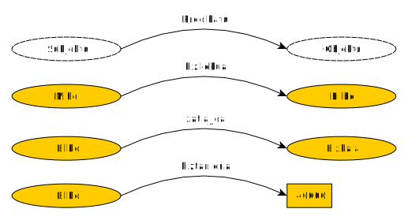
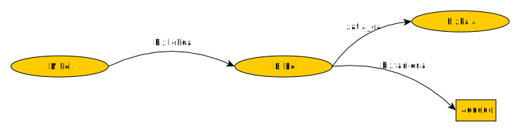
Grafoaren banako guztiak URIen bidez identifikatzen dira
URI: Uniform Resource Identifier (≠ URL!). Baliabideak identifikatzen ditu: http://www.wikidata.org/entity/Q8692
URL: Uniform Resource Locator. Sarean baliabide baten kokapen fisikoa adierazten duen URI-a: https://www.wikidata.org/wiki/Q8692
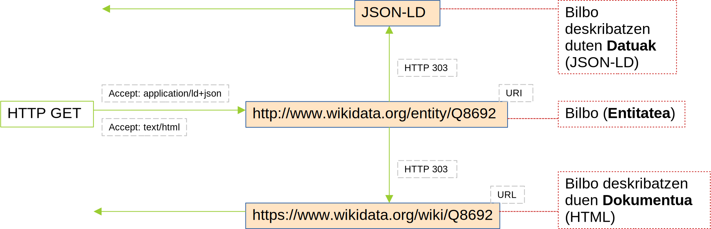
(Adibidea exekutatu)
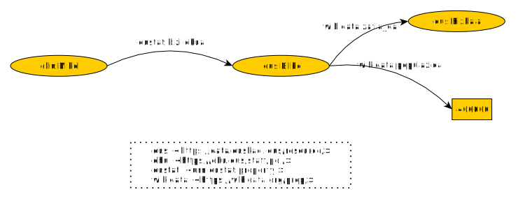
Subjektuak eta predikatuak baliabideak soilik izan daitezke (URIak)
Zenbait objektu balio literalak izan daitezke (Karaktere kateak)
Balio literalek datatype-a izan dezakete (XML Schema Datatypes)
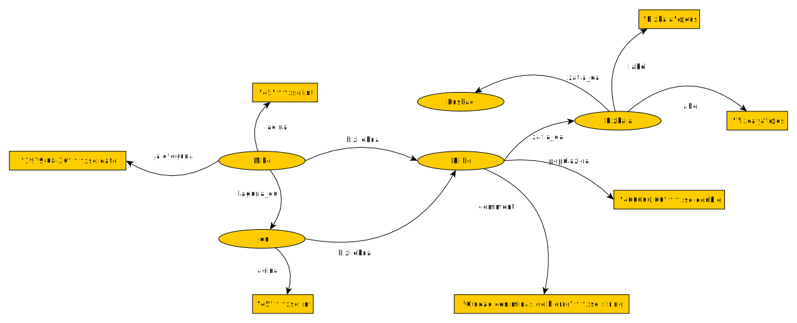
RDF datuak kodifikatzeko eredua da
Eredu abstraktu hori sintaxi desberdinen bidez irudika daiteke: Fitxategi batean "Serializatu" (idatzi)
Sintaxi horietako bat RDF/XML da
Ez nahastu eredua sintaxiarekin: RDF XML fitxategi bat baino askoz gehiago da!
RDF/XML (http://www.w3.org/TR/rdf-syntax-grammar/)
RDFa (http://www.w3.org/TR/rdfa-core/)
Turtle (http://www.w3.org/TR/turtle/)
N3 (http://www.w3.org/DesignIssues/Notation3.html)
JSON-LD (https://www.w3.org/TR/json-ld11/)


http://www.w3.org/RDF/Validator/
RDF W3C estandar bat da (=HTML, !=SQL), RDF fitxategi batetik abiatuz:
Triple Store-ak internet existitzen zenean sortu ziren (NoSQL!):
Tripleak URI batek identifikatutako "poltsa" batean biltzea (datuekiko desberdina): Named Graphs
Inplementazioaren araberakoa: Triple Store guztiek Default Graph bat dute, non triple guztiak biltzen diren
[Adibidea exekutatu]
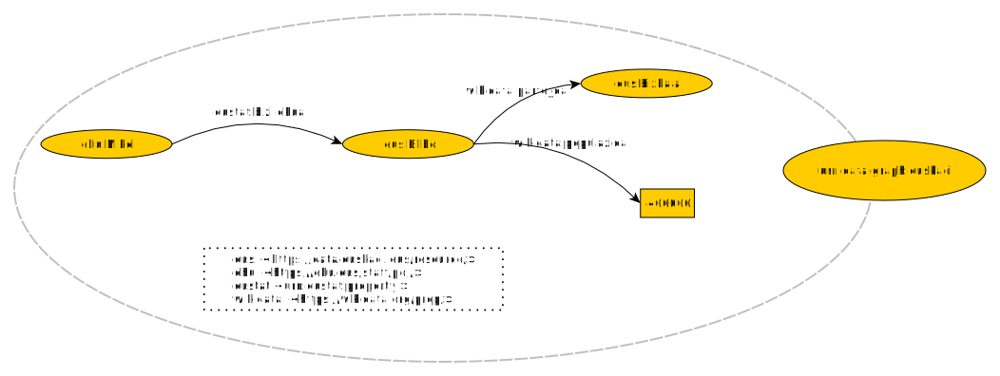
[Adibidea exekutatu]
Datuak eta metadatuak hizkuntza berdinean (NoSQL! RDF!)
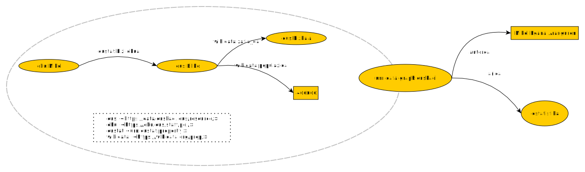
Datuak eta metadatuak hizkuntza berdinean (NoSQL! RDF!)
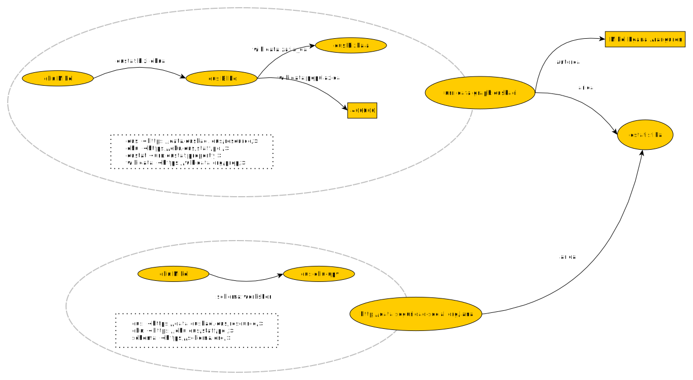
Default Graph
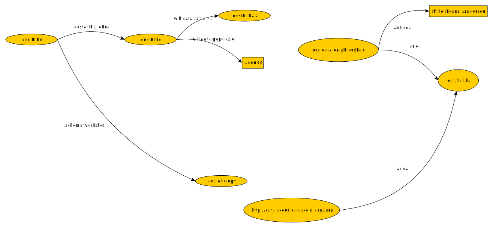
[Adibidea exekutatu]
rdf:type prdikatua: baliabideak klaseetan taldekatu
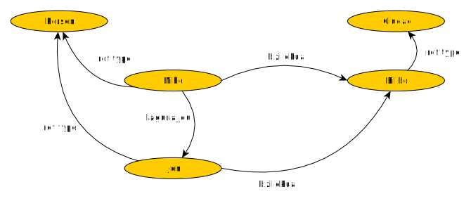
[Adibidea exekutatu - Class hierarchy]
Hizkuntza bera definitzen dute
RDF: http://www.w3.org/1999/02/22-rdf-syntax-ns# (Adib. rdf:type = http://www.w3.org/1999/02/22-rdf-syntax-ns#type), RDFek definitua (Bere burua definitzen du), RDFSek eta OWLek
RDFS: http://www.w3.org/2000/01/rdf-schema# RDFek, RDFSek (Bere burua definitzen du) eta OWLek definitua
Hizkuntza bera definitzen dute
SHACL: https://www.w3.org/ns/shacl.ttl RDFek, RDFSek eta OWLek definitua
OWL: http://www.w3.org/2002/07/owl# RDFek, RDFSek eta OWLek definitua (Bere burua definitzen du)
Domeinu zehatza deskribatzen dute: geografia, biologia, merkataritza, ...
Argitaratu nahi ditugun datuen propietate orokorrak definitzen dituzte
foaf:person, dbpedia-ont:city, dc:book, schema:person, ...
RDF: datu espezifikoak (Mikel, Jon, Bilbo, ...)
Ontologiak (RDFS, OWL): datu horien propietate orokorrak (Pertsona, Hiria, ...)
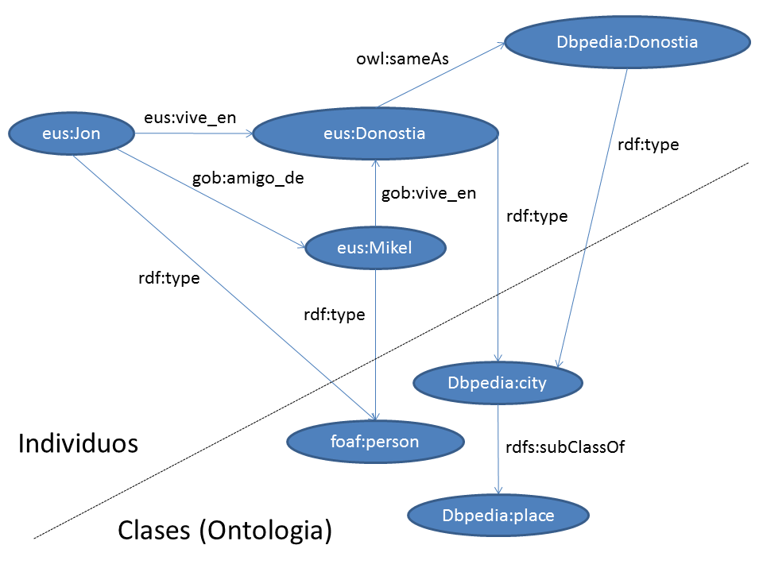